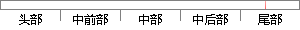

优先级为5和6的两个任务，当时钟节拍为10时，任务5挂起任务6，当时钟节拍为50时，任务5恢复任务6，代码如下：
片段位置图

相似结果
相似片段： OSTickISR()是系统时钟节拍中断服务程序,其执行频率在10～100Hz,主要功能是检查... 、改变任务的优先级、挂起和恢复任务等。系统初始化时会自动产生两个任务:一...
| 标题 | 《μC/OS-III中的高效时钟节拍管理机制_EEWorld电子工程世界搜索中心》 |
| 对比库 | PaperRater云论文库 |
| 网址 | http://so.eeworld.com.cn/blog/%CE%BCC%EF%BC%8FOS-III%E4%B8%AD%E7%9A%84%E9%AB%98%E6%95%88%E6%97%B6%E9%92%9F%E8%8A%82%E6%8B%8D%E7%AE%A1%E7%90%86%E6%9C%BA%E5%88%B6 |
| 相似率 | 72.97% （轻度抄袭） |
※ 片段修改建议 ※
近似词参考：- 恢复：规复
- 节拍：节奏
- 如下：以下
- 任务：使命 义务
系统自动生成语句：优先级为5和6的两个使命，当时钟节奏为10时，使命5挂起使命6，当时钟节奏为50时，使命5规复使命6，代码以下：
注：本片段修改建议为系统自动生成，仅供参考。